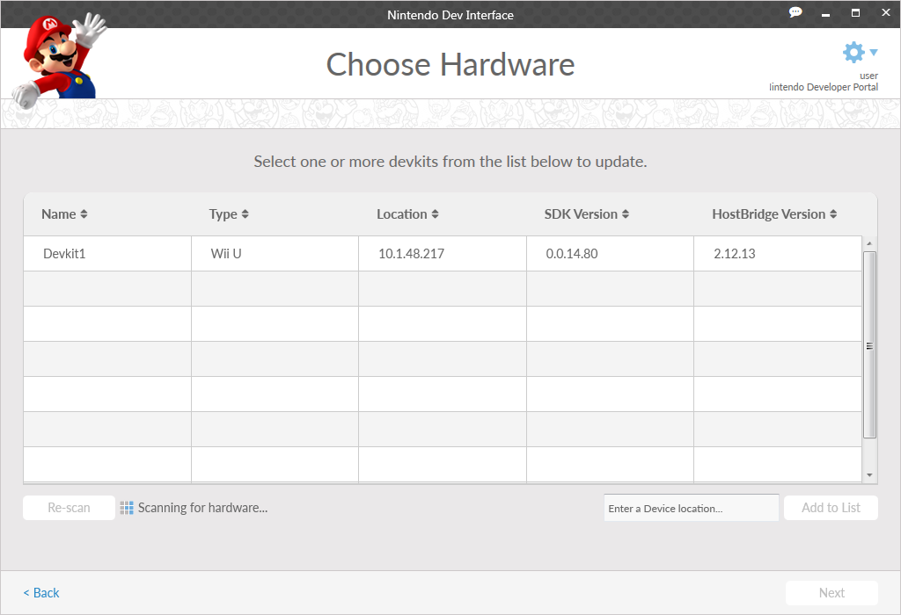
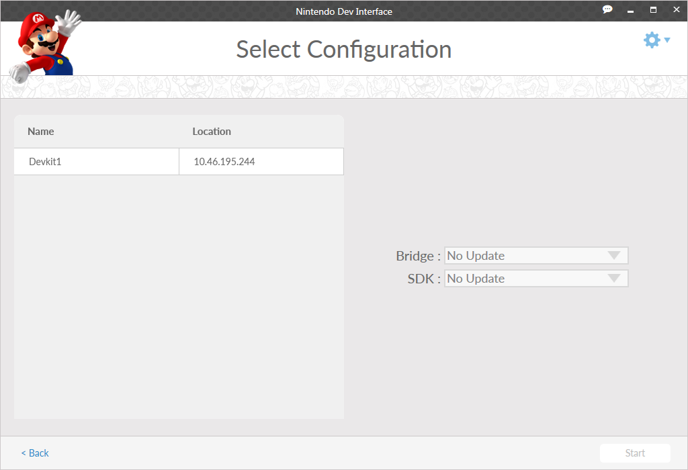
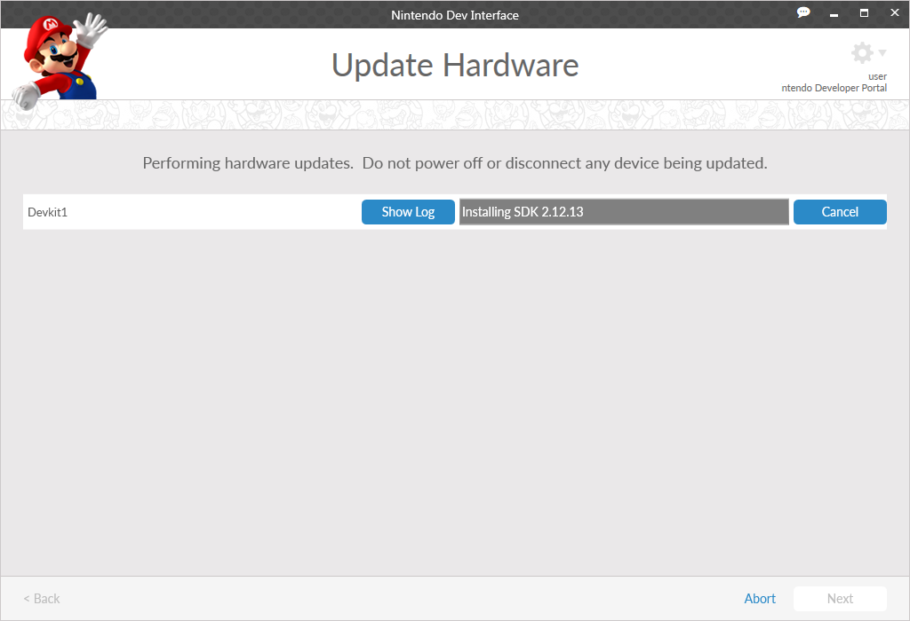
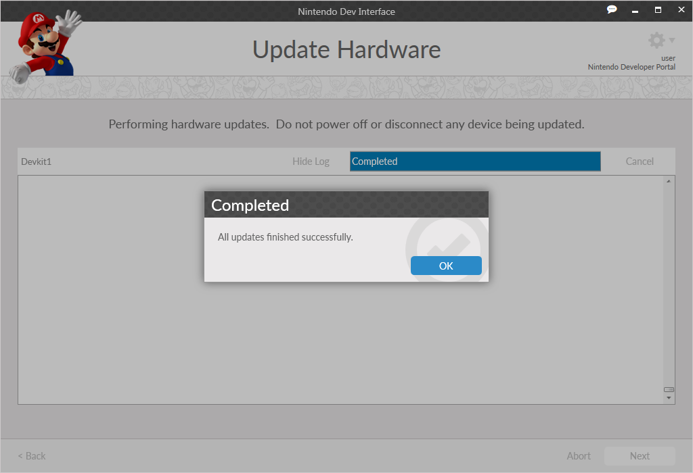

The Hardware tool updates a hardware device to the software version appropriate for the environments that have been installed on your PC.
The Choose Hardware screen displays the Nintendo hardware devices that are accessible by your PC.
Choose the device that you want to update from the list. Multiple hardware devices can be selected to update at at the same time by using a CNTRL-click on each device to be selected. Note that multiple types of development platforms may be listed if they are connected to your PC. If this occurs, selecting a device of one platform type prevents you from selecting a device of a different platform type.
Below is a Hardware screen, showing a connected hardware device.

If you do not see your hardware device, click the Re-scan button to search the network again.
If you still do not see your hardware device after performing a Re-scan, and you know the IP address of your device, enter the IP address of your device in the box in the lower-right labelled Enter a Device Location. Click the Add to List button to search for the specified device. If found, it will be added to the list.
Select the hardware device(s) that you want to update and click Next.
The Select Configuration screen displays information about the hardware that you have chosen, and allows you to select software to update to that hardware. A typical screen might resemble the following.

Depending on the hardware platform chosen, several software selections are available. Software is only listed if it is applicable to the hardware platform that has been selected. The following options may be available.
Allows the selection of the Bridge software version to update to the device(s) version. In general, use the latest version of this software.
Allows the selection of the SDK software version to update to the device(s) version. Available SDK versions are determined by installed environments.
If you do not want the latest version of any of these categories, or there is no version later than what is already installed, you may leave the selection as No Update.
When you are ready to install, click the Next button. You are taken to the Update Hardware screen.
If you terminate a hardware update before the process is complete, unexpected results may occur. For more information, see Hardware Update Termination.
After choosing updates for your hardware and clicking Next, the update progress is displayed in real-time as each file is processed. If you chose to update most software, a typical update screen resembles the screen shown below.
By default, the log window for a device is not displayed. To display the output log of the install for a particular device, click the Show Log button. If multiple devices are being updated, only a single log can be displayed at one time. To close the log for a particular device, click the Hide Log button. This allows you to open log windows for other devices.

When the update completes, it should resemble the screen shown below. An All updates finished successfully. confirmation appears, indicating that the updates were installed correctly. If an error occurs, an error message is displayed to the screen, allowing you to then take the appropriate action.

Click Next to return to the Welcome screen.
If you terminate a hardware update before the process is completed, your device could enter an inoperable state and any maintenance will require assistance from Nintendo support.
CONFIDENTIAL